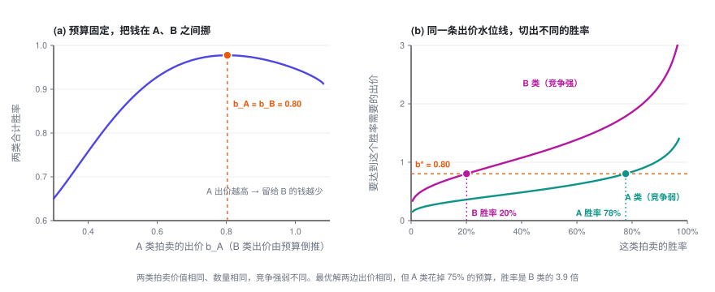
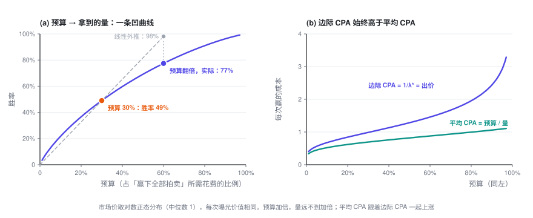

预算约束下的出价
一天有成千上万次拍卖，却只有一份预算。拉格朗日乘子把这条约束压缩成一个数 \lambda，每次的出价都是「价值 ÷ \lambda」。由它能推出几个反直觉、但很好用的性质：价值相同就出同一个价；预算翻倍，量却不会翻倍。
出价专题 · 第 2 篇 / 共 3 篇 · 阅读约 10 分钟
前情提要：上一篇只看一次拍卖，结论是二价下如实报价 b^\star = v，并且多赢一次的边际成本正好等于出价。这一篇加上预算：一天有很多次机会，总共只能花 B。
本篇会用到的符号
| 符号 | 含义 |
|---|---|
| t = 1,\dots,T | 第 t 次拍卖（一次曝光机会），一共 T 次 |
| v_t | 第 t 次机会对你值多少，比如这次曝光的 pCVR |
| w_t(b),\ c_t(b) | 第 t 次拍卖的胜率曲线和期望花费，每次都可以不同 |
| B | 总预算 |
| \lambda | 预算约束的拉格朗日乘子，即影子价格 |
| \alpha = 1/\lambda | 出价系数 |
| V^\star(B) | 预算为 B 时最多能拿到的总价值 |
完整符号表见专题目录。
1. 把问题写下来
一天里有 T 次拍卖。第 t 次的价值是 v_t，胜率曲线是 w_t(b)，期望花费是 c_t(b)。每次拍卖的竞争强弱都可以不一样。你要给每一次定一个出价：
目标里只有价值，没有减去花费。这对应最常见的产品形态：「预算给你，帮我拿尽可能多的转化」。广告主往往说不清一次转化到底值多少钱，但预算是明确的。
展开：另一种常见写法——对分布积分
如果把每次拍卖看成从同一个分布里抽出来的，比如用 r 表示这次曝光的 pCTR 或 pCVR，它的分布是 p(r)，价值是 u(r)，出价是 r 的函数 b(r)，那么把目标和约束都除以 T，就得到 ORTB 一类文献里常见的写法（记号略有出入）：
这里有两个分布，别混：p(r) 是你自己的价值的分布，w 背后是市场价 z 的分布。下面的推导对两种写法完全一样。
2. 求解
第一步：把约束用一个乘子挂到目标上。
第二步：它拆开了。 给定 \lambda，L 是 T 项之和，每一项只含一个 b_t，所以逐项最大化就行：
方括号里正是上一篇的单次拍卖问题，只不过价值从 v_t 换成了 v_t/\lambda。二价下的答案是如实报价：
第三步：用预算定出 \lambda。 总花费 S(\lambda) = \sum_t c_t(v_t/\lambda) 随 \lambda 单调递减，二分 \lambda 让 S(\lambda^\star) = B 即可。LinkedIn 出价论文（Gao 等，2022）的第 2 节用的也是这套推导。
展开：为什么这样得到的就是原问题的最优解（两行，不需要凸性）
设 b^\star 在某个 \lambda \ge 0 下最大化 L，并且恰好花完预算 \sum_t c_t(b_t^\star) = B。任取一组满足预算的出价 b：
第一个不等号用了 \lambda \ge 0 和预算约束，第二个用了 b^\star 最大化 L，最后的等号用了「恰好花完」。所以没有任何满足预算的出价能拿到比 b^\star 更多的价值。
整个论证没用到 w_t、c_t 的凹凸性。逐项最大化那一步用的是上一篇的「导数在 b = v_t/\lambda 左边不为负、右边不为正」，同样不需要凹性。
3. 这个公式的几个性质
3.1 出价和价值成正比，全局只需要一个数
几百万次拍卖的出价，被压缩成了一个标量 \alpha（业内常叫出价系数，或 pacing multiplier）。预算紧，\lambda 就大，所有出价同比例压低；预算松，所有出价同比例抬高。
3.2 价值相同，出价就相同——哪怕竞争完全不同
如果每次机会的价值都一样（比如只按曝光数或点击数算），v_t \equiv v，那么 b_t^\star \equiv v/\lambda：所有拍卖出同一个价，不管这一场竞争强还是弱、是早上还是半夜。
这有点反直觉：竞争弱的地方难道不该少出点、竞争强的地方多出点？回到上一篇的关键事实就明白了。二价下，多赢一次的边际成本等于出价。假设 A 类拍卖的出价 b_A 高于 B 类的 b_B：在 A 上边际多赢一次要花 b_A，在 B 上只要 b_B。把一点预算从 A 挪到 B，同样的钱就能多换来一些量。只要两边出价不等，就还能这样挪，挪到出价相等才停。搜索广告里早有类似的结论：给所有关键词出同一个价（uniform bidding），是预算约束下最大化点击的好策略（Feldman 等，2007）。
价值不同时，同样的道理变成：边际上每单位价值的价格 b_t/v_t 处处相等，都等于 1/\lambda。这就是定价专题第三篇里「边际拉平」在出价问题里的样子。

注意图 (b)：出价相同，不等于胜率相同，也不等于花费相同。 最优解里，竞争弱的 A 类胜率是 B 类的近 4 倍，花掉了 75% 的预算。竞争的差异不体现在出价上，而是体现在「在哪里赢得多」上。
3.3 \lambda 是什么：多给一块钱预算，能多换来多少价值
\lambda^\star 是预算的影子价格：每多给 1 元预算，最多能多换来多少价值。反过来，1/\lambda^\star 就是边际上买一单位价值的价格。当价值按转化计（v_t = pCVR）时，1/\lambda^\star 就是边际 CPA。
展开：dV^\star/dB = \lambda^\star 的推导
预算从 B 变到 B + dB，每个出价跟着变 db_t。总花费的变化必须等于 dB，再用上一篇的 c_t'(b) = b\,w_t'(b)：
总价值的变化，用 v_t = \lambda^\star b_t 代换：
3.4 边际递减：预算翻倍，量不会翻倍
预算越多，\lambda^\star 越小，dV^\star/dB 也就越小。所以 V^\star(B) 是一条凹曲线：边际 CPA 随预算单调上涨，平均 CPA 总是低于边际 CPA。
最简单的假设下有闭式解。设每次机会价值相同（v_t \equiv 1，只数赢了几次），市场价在 [0, m] 上均匀，一共 T 次拍卖，赢下的次数为 N：
几个直接的推论：
- 量和预算的平方根成正比：预算翻倍，量只多 41%。
- 平均 CPA = B/N^\star = b^\star/2，边际 CPA = dB/dN^\star = b^\star：边际是平均的整整 2 倍。
- 市场价整体涨一倍（m \to 2m），同样的预算下量掉到原来的 1/\sqrt{2}，出价则涨到 \sqrt{2} 倍。
展开：闭式解怎么来的
价值相同，所以出价是一个常数 b。每次拍卖的胜率是 b/m，期望花费是 b^2/(2m)（上一篇的均匀分布例子）。花完预算：
量 N^\star = T\,b^\star/m，代入即得 \sqrt{2TB/m}。反过来 B = mN^2/(2T)，求导 dB/dN = mN/T = b^\star。

图里用的是更贴近真实的对数正态市场价：预算从 30% 加到 60%，胜率从 49% 涨到 77%，而不是线性外推的 98%。
3.5 多个版位、多个计划共用预算：同一个 \lambda 自动分好
上面的推导从头到尾没要求 T 次拍卖来自同一个广告位。它们可以来自信息流和站外媒体两个版位，也可以来自同一个账户下的几个计划。结论不变：全部用同一个 \lambda 出价，各版位、各计划的边际 ROI 自动相等，预算分配自动最优，不需要人工拆预算。LinkedIn 出价论文（Gao 等，2022）第 5 节对这一点有完整的讨论。
3.6 一价呢？
逐项问题变成 \max_b\ (v_t/\lambda)\,w_t(b) - b\,w_t(b)，套用上一篇的一价公式：
先按 \lambda 缩放，再在上面压价。 结构不变，仍然只有一个全局的 \lambda。但 3.1 和 3.2 一般不再成立：压价幅度跟着每次拍卖的 w_t 走，出价不再和价值成正比。真正被拉平的是每单位价值的边际成本：(b_t + w_t/w_t')/v_t = 1/\lambda。二价里边际成本正好等于出价，所以才表现为 b_t/v_t 被拉平。
4. 落地时会踩的坑
- 预算不紧时，公式会说出价无穷大。 目标里没有「钱」，预算花不完时 \lambda^\star = 0，不花白不花。实践中一定要配上出价上限或成本约束（第三篇）。
- pCVR 整体高估不要紧，局部高估才要命。 所有 v_t 统一乘以 1.3，\lambda^\star 也跟着乘以 1.3，出价纹丝不动。但如果只有某一类流量被高估，\lambda 吸收不掉，预算会被错配到这一类上。
- 「加了预算，平均 CPA 变差」不一定是出了问题。 3.4 说了，这本来就该发生。判断健康与否要看边际 CPA，二价下它就是「出价 ÷ pCVR」，不要只看平均 CPA。
出价专题 · 第 2 篇 / 共 3 篇